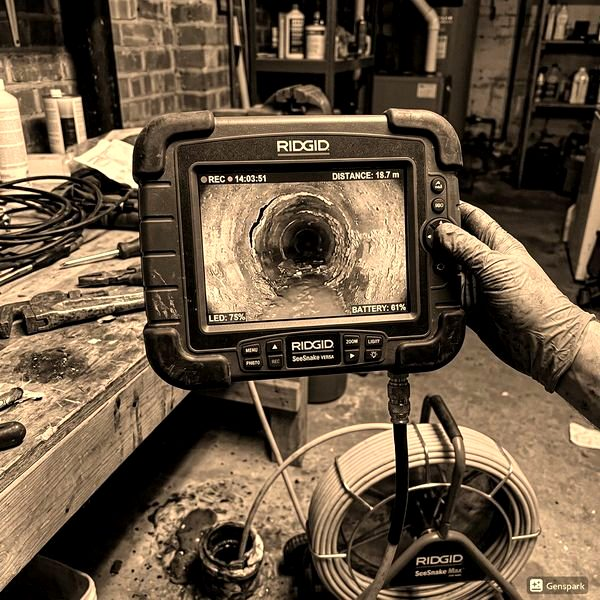
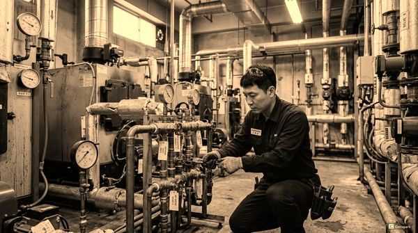
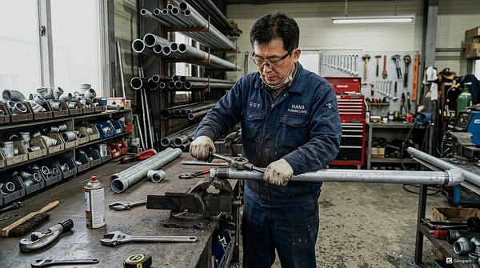

배관 세정제 사용 시 주의사항 - 잘못 쓰면 배관 손상
2026년 4월 12일 | 제우스시설관리
배수가 느려지면 마트에서 배관 세정제를 사는 분들이 많습니다. 하지만 화학 세정제의 잘못된 사용은 배관을 부식시키고 오히려 상황을 악화시킬 수 있습니다. 올바른 사용법과 한계를 알아야 합니다.

시중 배관 세정제는 크게 알칼리성(가성소다 계열)과 산성(황산, 염산 계열) 두 종류입니다. 알칼리성 제품은 유기물(기름, 머리카락)을 녹이는 데 효과적이고, 산성 제품은 무기물(석회, 물때)을 녹입니다. 두 종류를 절대 섞으면 안 됩니다. 유독 가스가 발생합니다.
화학 세정제의 한계는 명확합니다. 배관 내벽에 붙은 고착된 오물은 녹이지 못합니다. 세정제가 닿는 표면만 반응하기 때문에, 두꺼운 오물층은 관통할 수 없습니다. 또한 PVC 배관에 강산성 제품을 반복 사용하면 배관이 변형될 수 있습니다.

안전한 대안으로 베이킹소다 + 식초 조합을 추천합니다. 화학 반응이 온화하여 배관 손상 없이 경미한 막힘을 해결할 수 있습니다. 주 1회 예방적으로 사용하면 배관 청결 유지에 도움됩니다.

화학 세정제로 해결되지 않는 막힘은 물리적 방법이 필요합니다. 드레인 기계는 스프링 와이어로 막힌 덩어리를 직접 절삭하고, 고압세척기는 150bar 수압으로 배관 내벽을 깨끗하게 세척합니다. 배관에 안전하고 확실한 방법입니다. 제우스시설관리: 28분 내 출동, 010-4406-1788